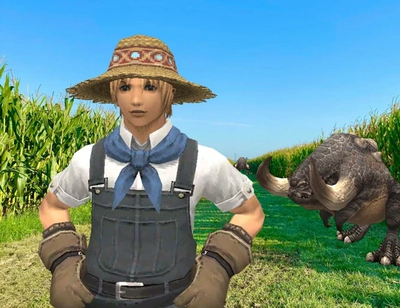
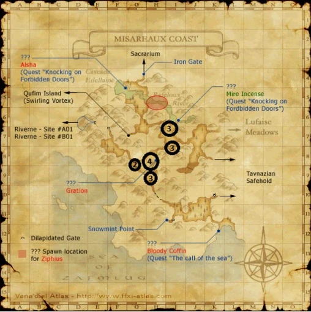

Level 75 reference · Zenith rules


Introduction
Welcome to my farming guide! I've been playing with the idea of making this for a very long time, obviously FFXI revolves around gil and everyone is always looking for the next big farming spot. With this guide I plan to test and evaluate a multitude of spots on Eden, listing their gil/hr, difficulty, pros and cons, and any x factors. Hopefully by applying the same test conditions to every farming camp, this guide will show a more standardized gil/hr benchmark for Eden. This guide will largely be done single box with a very high end Thief with TH4. I considered testing with other conditions like TH1 or a lower end Thief, but realized there's just too many variables to factor for and it would make everything a bit too messy in my opinion. I will likely at some point test things like fishing, digging, and mining, but for the time being it will be strictly farming. If there's any farming spot you would like to see tested, reach out and let me know! I'll post a snapshot of my gear used here just to show what the testing conditions are:
Gigantobugard - Miseraeux Coast


| Drop | NPC Value | AH Value | Items Per Hour |
|---|---|---|---|
| Bugard Skin | 450 | - | 55 |
| High Quality Bugard Skin | 1600 | 4166 | 16 |
| Bugard Tusk | 719 | 10000 | 8 |
| Atlaua's Ring | 11531 | - | - |
| Bravo's Subligar | - | 50000 | - |
Gil/hr: 55-60k to vendor. 160k+ if you can Auction House it all.
Difficulty: Low
Bonus: Odqan NM (Spawns relatively often)
Optimizations: Food (meat), Movement speed items, Ridill.
Bugards are a farm I continually return to, being one of the easiest and chillest farms you can find. The mobs are very low level, requiring no shihei or bolts to kill. I tend to dump all my items to vendors, because the demand for HQ Bugard Skins and Bugard Tusks is relatively low, sometimes taking months to sell a single stack. The consistency with this camp is what keeps me coming back, you can get a little bump in gil from Odqan but overall you just always walk out with 55-60k in vendorables and can just spam this camp as much or as little as you'd like. Make sure not to auction your Bugard Skins, as they vendor for more than the normal AH price.
Buffalo - Uleguerand Range
| Drop | NPC Value | AH Value | Items Per Hour |
|---|---|---|---|
| Buffalo Meat | - | 4000 | 16 |
| Buffalo Hide | - | 15000 | 1 |
| Uleguerand Milk | 83 | 333 | 20 |
| Cure Clogs | - | 150000 | - |
| Tredecim Scythe | 13000 | - | - |
Gil/hr: 80-85k/hr.
Difficulty: Medium
Bonus: Bonnacon NM (low spawn rate). Beastman and Kindred Seals add value. EXP.
Optimizations: Food (meat), Acid Bolts, Bloody Bolts, Fellow, Dual Box.
Buffalo are another one of my favorite farms, this farm is one that almost entirely interacts with the auction house, but oddly enough is usually under served on Eden and demand outstrips supply pretty often. Whether you want to NPC or AH the Milk is your call, I've had trouble selling the massive amounts of milk this camp generates and usually just vendor it. These mobs are no joke, they have TP moves that hit through Utsusemi, high HP, high defense, and are relatively high level which means you may even have some accuracy if you are using a low combat skill weapon like Ridill or Kraken Club. That said, I've been doing this camp since I was a very undergeared Nin/thf back in the day, so it's not that scary. I'd recommend bringing plenty of Bloody Bolts, Acid Bolts, and Shihei along, as well as some Meat Mithkabobs to speed it up, you can also use the Milk to give yourself some HP regen (80 total per milk).
Master Coeurl - Zi'tah
Deinonychus/Yowie - Kuftal Tunnel
Sabertooth Tiger - Carpenter's Landing
Tundra Tiger - Beaucedine Glacier
Leeches - Buburimu Pensula
Leeches - Sea Serpent Grotto
Goblin Thug - Dangruf Wadi
Goblin Thug - King Ranperre's Tomb
Adapted from Eden Wiki: It ain't much, but it's honest work - a Farming Guide · Contributors and history · CC BY-SA 4.0. Revision 45120. Layout, links and optional background text adapted for Zenith.